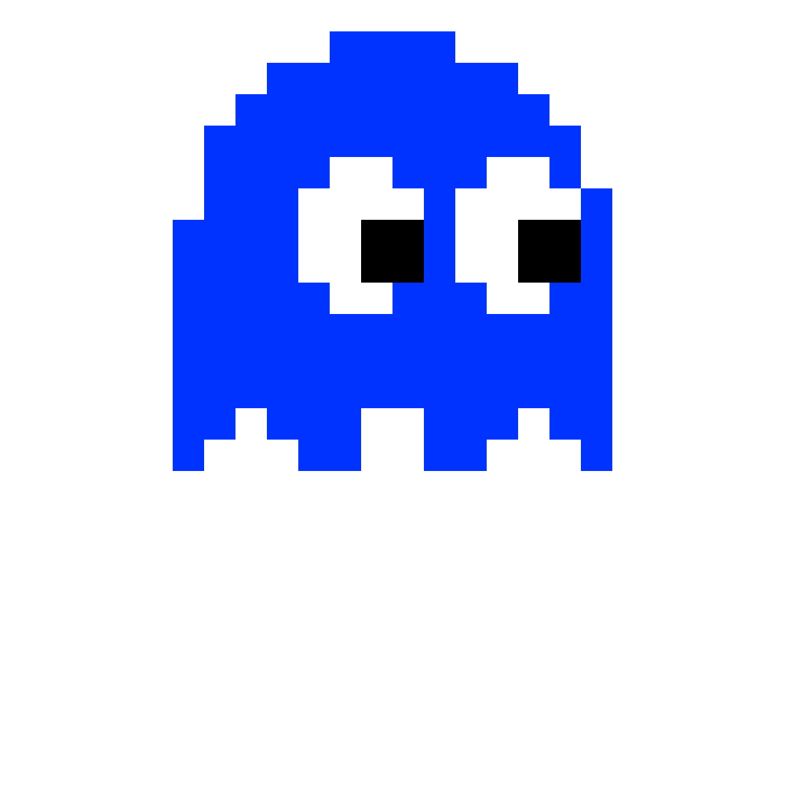
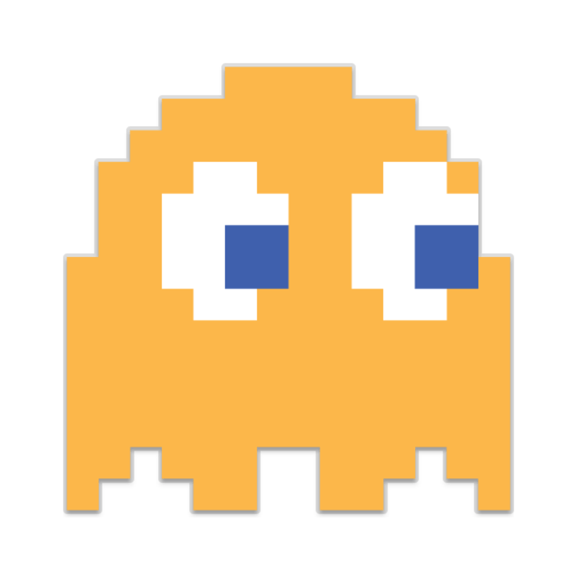
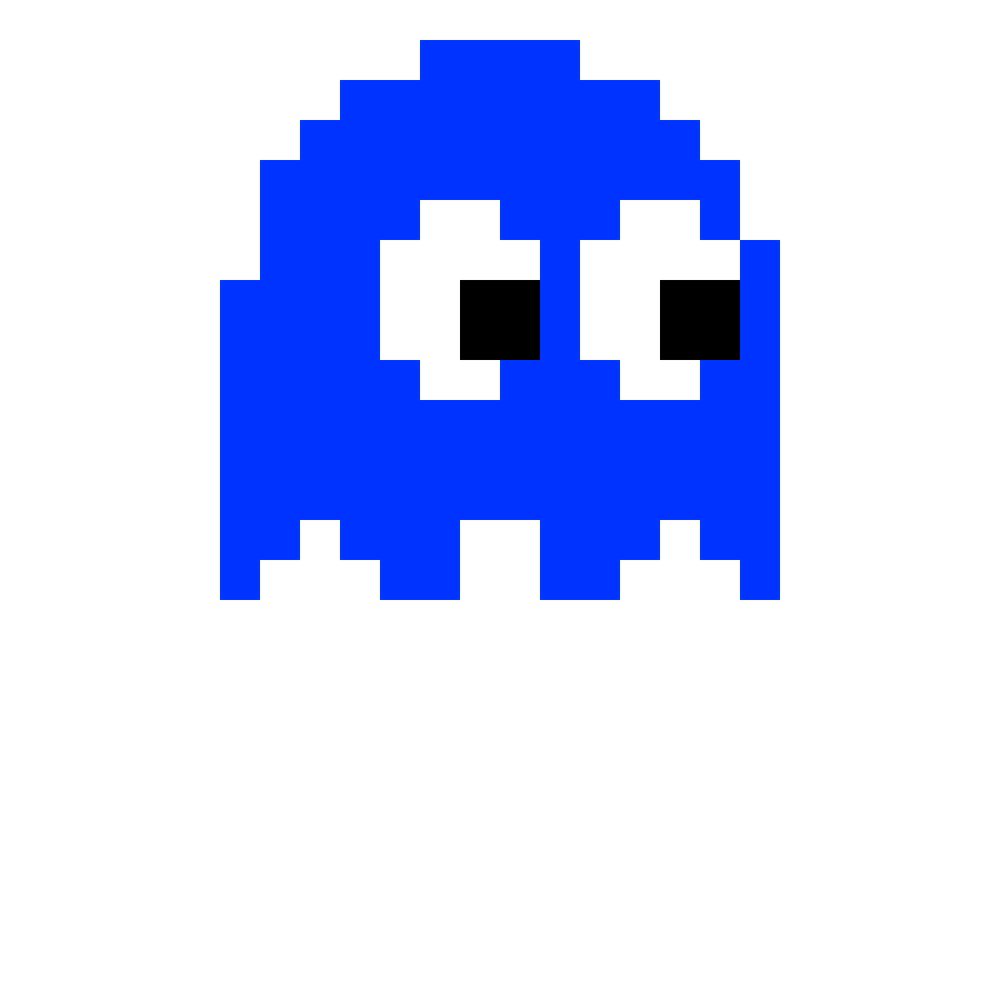
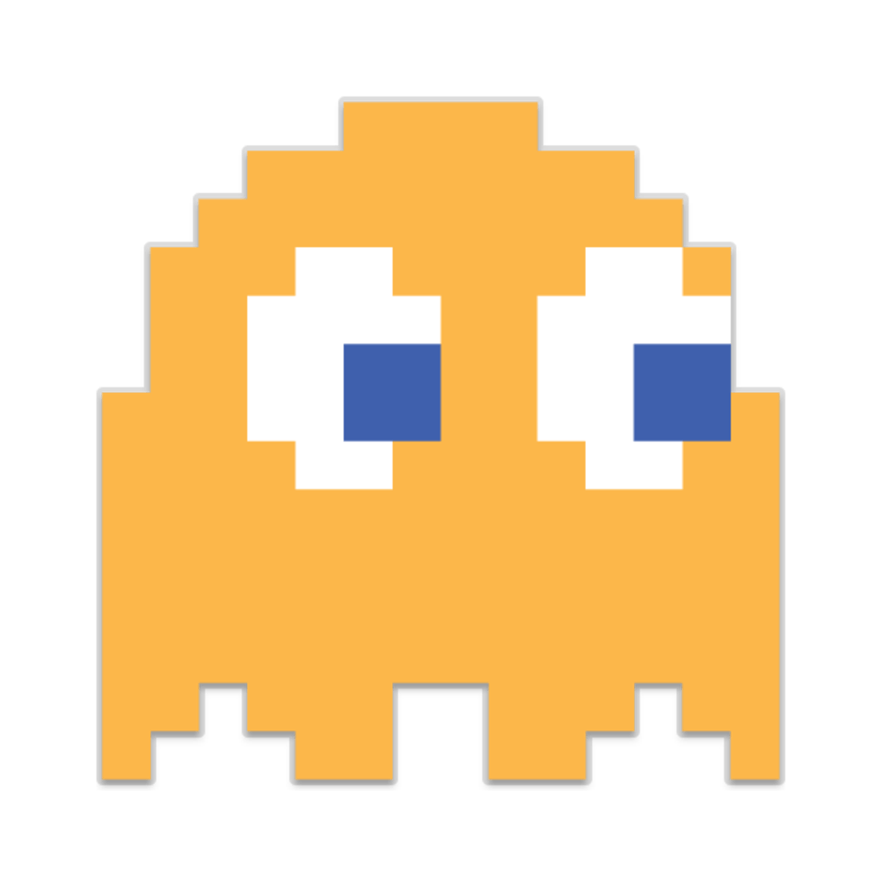

About me
Hello! I’m Cristiano Ronaldo, a college student currently studying Digital Business at UNIVERSITAS WIDYA DHARMA.
I’m passionate about learning new skills, working on creative projects, and building a strong foundation for my future career.
Throughout my academic journey, I’ve developed an interest in Entrepreneurship, Business Management, Digital Marketing, and Sales, and I love applying what I learn in class to real-world projects.
I’m eager to grow both personally and professionally, and I’m always open to new opportunities that challenge me and help me learn more.
In my free time, I enjoy graphic design & pool, and collaborating with others on innovative ideas.
I’m excited about what lies ahead and look forward to making a positive impact wherever I go!
 


